Общая выставка 15 сентября 2026 год
01_D. Наташа
{kind=link}
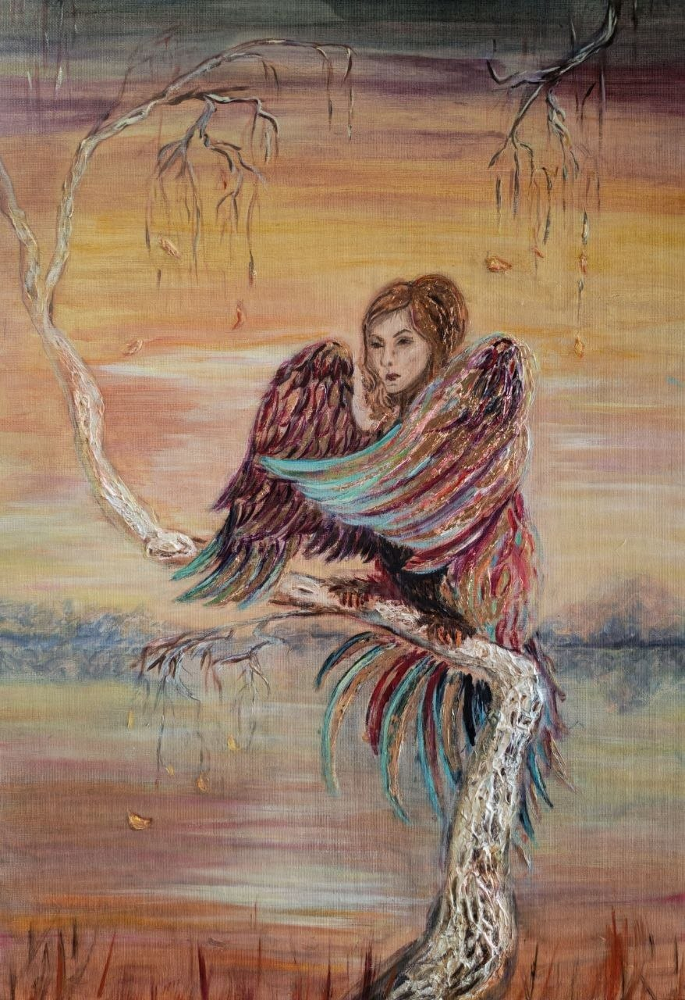
01_D_Наташа_1_ДУБЛЬ.jpg
Работа от Надежды. «Одиночество» холст масло текстурная паста поталь. Крылья птицы с ликом женщины переливаются всеми цветами радуги, словно хранят в себе всю палитру человеческих эмоций и переживаний.
Дерево как символ жизни, а голые ветви его отражают цикличность бытия. Сейчас осень но весна обязательно придет. Одиночество не вечно, оно лишь часть жизненного пути.
Эта картина говорит нам о том, что одиночество — это не только пустота, но и пространство для размышлений, созерцания и поиска себя.
{kind=link}
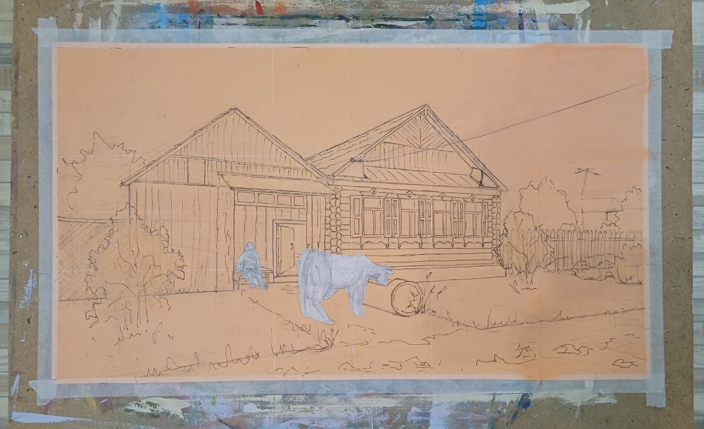
01_D_Наташа_2_ДУБЛЬ.jpg
Здравствуйте, Олег Леонидович и Владимир Николаевич! В этот раз посылаю на разбор вот такое начало работы. 35×62 Персонажи вырезаны из кальки, пока примеряюсь. Возможно, на лужайку справа добавлю теленка. Это бабушкин дом. Восстанавливала его из памяти и по фото. Это дом и крытый двор. Самый большой дом на улице. Строил его дед. Сколько воспоминаний с ним связано! Олег Леонидович, мне очень нужны ваши советы. Всегда с благодарностью, Наташа
{kind=link}
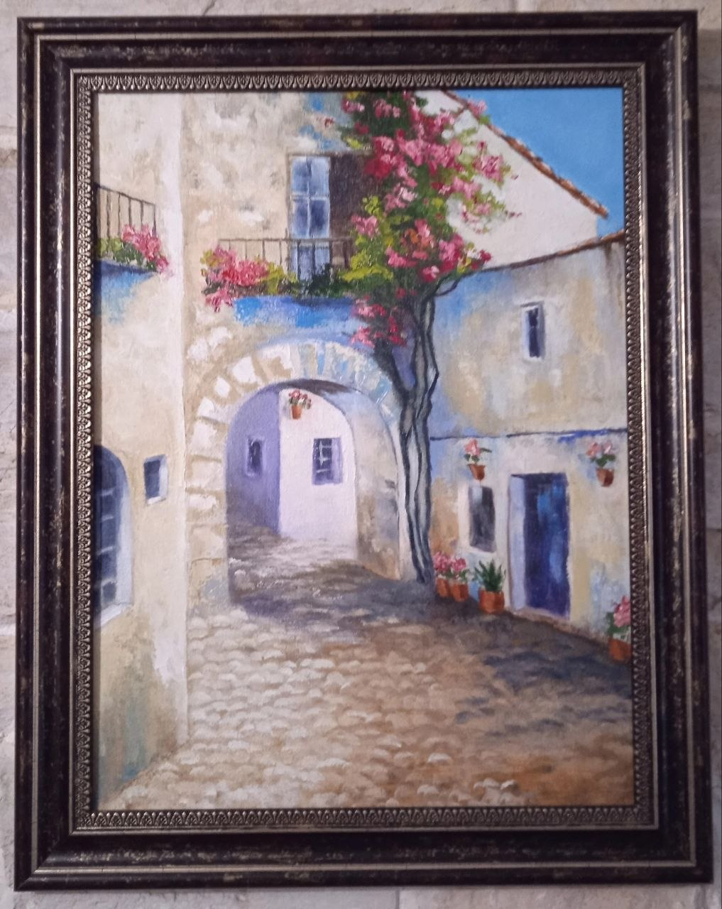
01_D_Наташа_3_ДУБЛЬ.jpg
Переслано из ВК. Здравствуйте, меня зовут Котомцева Ирина, я из Краснодарского края. Город Приморск-Ахтарск. Моя картина написана по мастер-классу. Как добиться ощущения жаркого солнечного дня на ней?
{kind=link}
01_V. Victoria Arcadi

01_V_Victoria Arcadi_1.jpg
Возьмите пожалуйста мою работу на разбор. К сожалению я не успела 🥲 с уважением Виктория Аркади 👌🙏
02_D. Мария Корнеева

02_D_Мария Корнеева_1.jpg
Добрый день , Олег Леонидович и Владимир Николаевич! Пройдя прекрасный пленэрный наш путь через поля, леса и реки…, вдохновилась написать серию про воду и плавательные средства)) решила сперва потренироваться на маленьком формате 30*40 см, важно ваше мнение получилось ли у меня передать фактуру, плановость и атмосферу, спасибо!
02_V. Салтанат Атаханова

02_V_Салтанат Атаханова_1.jpg
Здравствуйте,уважаемые метры!
Эта работа первая акварелью . Понимаю, что мягко говоря , очень сырая.
Поэтому хотелось бы услышать от Вас где провалы и недостатки в цвете и тоне . Работа полностью творческая , хотела её повторить именно акварелью (она очень непредсказуемая ,тем и покарила меня).Я эту работу отправляла на челлендж ,,окно художника",там фото более удачное ,скорее всего разное освещение.
Заранее благодарна Вам!
А подпись поставлю после ,когда доработаю!
03_D. Тamara
{kind=link}
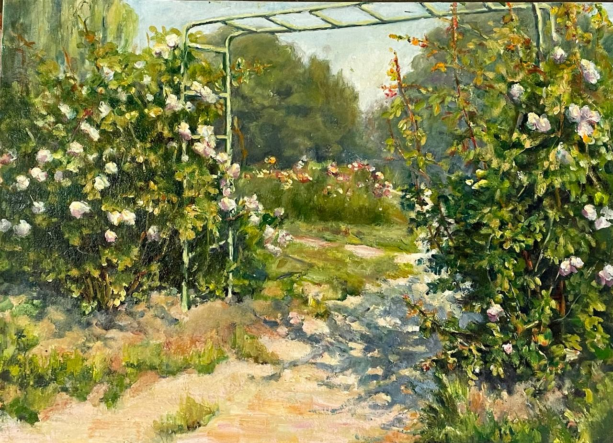
03_D_Тamara_1.jpg
Здравствуйте, Олег Леонидович и Владимир Николаевич. «Среди роз» 30х40см. Масло. Основная задача была развести зелень в пространстве, чтобы передний, второй, третий план не слипались и писать не через зеленый. Жду замечания и рекомендации как улучшить. Спасибо Вам огромное.
{kind=link}
03_V. Tanya
{kind=link}
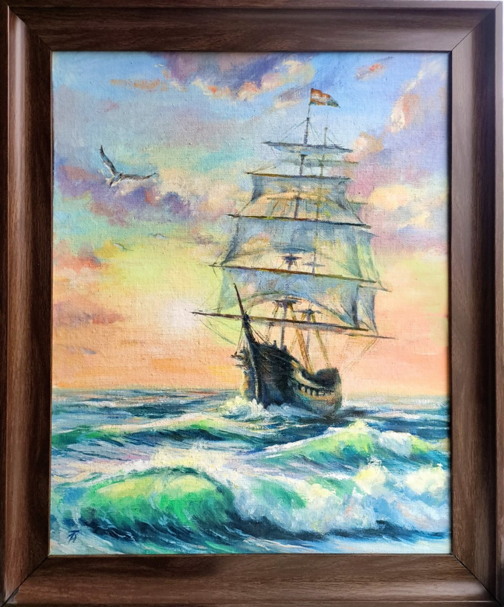
03_V_Tanya_1.jpg
Здравствуйте, Олег Леонидович и Владимир Николаевич. Очень люблю ваши разборы, особенно когда слушаешь о своей работе, какое-то особенное чувство испытываю. И каждый раз волнительно. В этот раз присылаю Фрегат. Масло, 50х40. Мне нужно было именно фрегат нарисовать, поэтому без Пинтерест не обошлось. Но я немного изменила их картинку, кажется ии. Высылаю для сравнения. Хочется услышать ваше мнение. У меня сомнение вызывает фрегат. Вам не кажетс, что он собирается развалиться?
{kind=link}
04_D. Контана /Елена Е/

04_D_Контана _Елена Е__1.jpg
С добрым осенним днём, любимая "Художка"!
Отправляю прошлогоднюю работу, т к. сейчас нет возможности "наваять что-то свеженькое"🤗, хотя задумок море.
Работа "Измайловский парк" выполнена в смешанной технике, акварель+тушь, А3 ❤️❤️❤️
04_V. Татьяна
{kind=link}
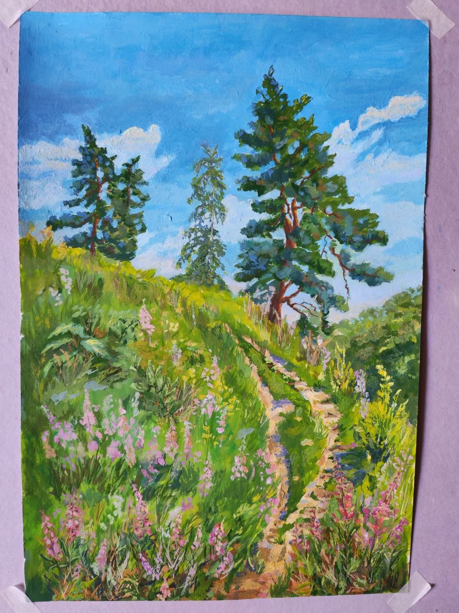
04_V_Татьяна_1.jpg
Начинала работу на пленере. Заканчивала дома по фотографии. Почувствовала разницу.
Бумага, гуашь, А4.
05_D. Татьяна

05_D_Татьяна_1.jpg
05_V. Боровик Дмитрий

05_V_Боровик Дмитрий_1.jpg
Добрый вечер, Жавер не присылал, рассмотрите пожалуйста, мою работу, Спасибо🙏
06_D. Irina
{kind=link}
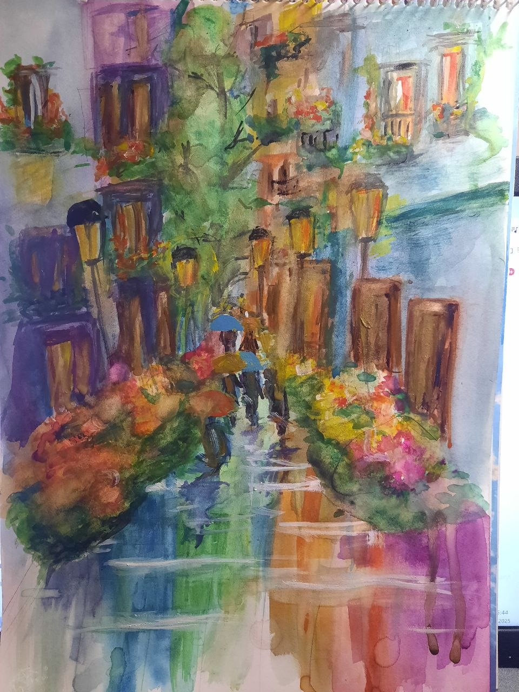
06_D_Irina_1.jpg
Опять я побоялась не успеть и переуспела)
Добрый день, дорогие наставники "Художки"! Отправляю старую работу. Очень просят её подарить, а мне стыдно! Пытаюсь объяснить, что нарушена перспектива, плановость и вижу ещё миллион ошибок. Может, возможно эту работу сделать сильно декоративной, чтобы подумали, что это не мои кривые ручки так сделали, а я просто " художник, я так вижу". Помогите не опозориться и не изображать из себя жадину. Предлагала другие свои каляки (более удачные) , но просят только эту(
Это акварель, бумага для акварели А4. Просто рисовала настроение и тренироваласть рисовать акварелью, не расчитывая на то, что кому-то понадобится моя каляка.
06_V. Tata
{kind=link}
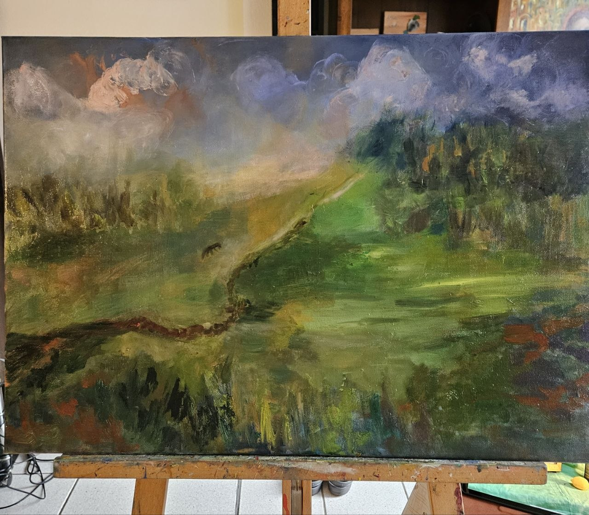
06_V_Tata_1.jpg
Забыла написать, это масло на холсте, холст оказался очень тонким, к сожалению, грунтовку накладывала акриловым гиунтос, но он очень тянет краску. Размер 50х70. Спасибо за Художку!
07_D. Li Lik

07_D_Li Lik_1.jpg
Ух здорово,спасибо.
07_V. Екатерина С

07_V_Екатерина С_1.jpg
Здравствуйте, пересылаю вам работу от Татьяны С. Ее комментарий: Здравствуйте уважаемые Олег Леонидович и Владимир Николаевич. Всегда мучаюсь с выбором что именно отправить на разбор, Ну вот только закончила Натюрморт с натуры А3 акварель. Темперамент в нем отсутствует! Думаю Вы найдете чего ещё ему пожелать. Спасибо!
08_D. ieva
{kind=link}
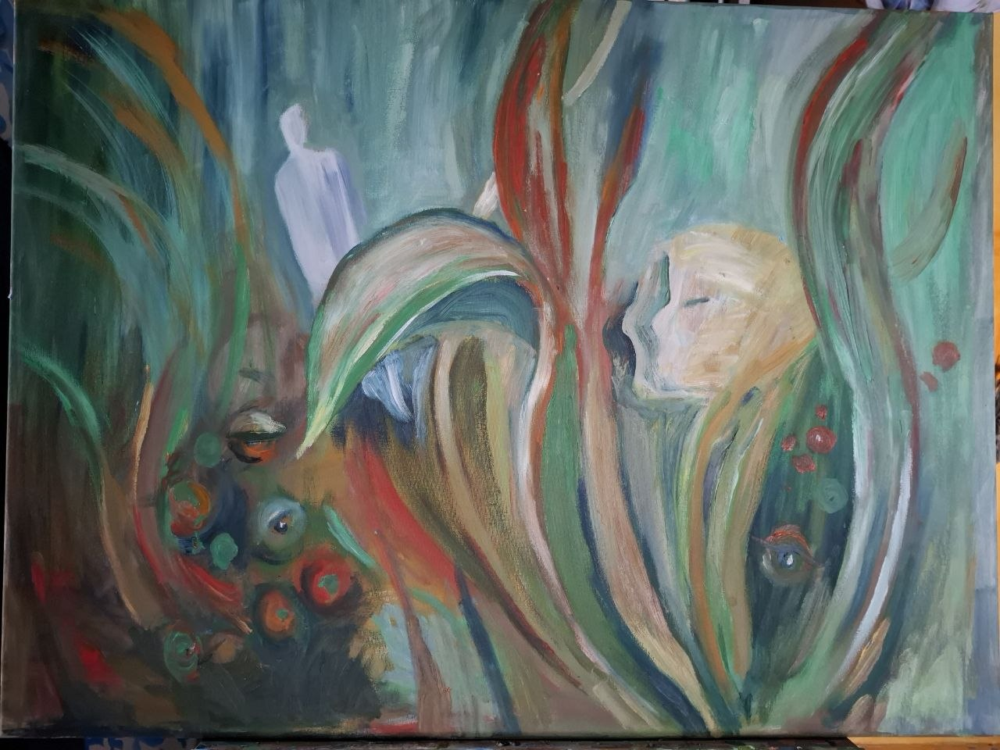
08_D_ieva_1.jpg
Здраствуйте! Эта картина маслом, незаконченная. Я к ней ещё работаю. Пожалуйста подскажите, что изменить или исправить. Большое спасибо!
08_V. Марина
{kind=link}
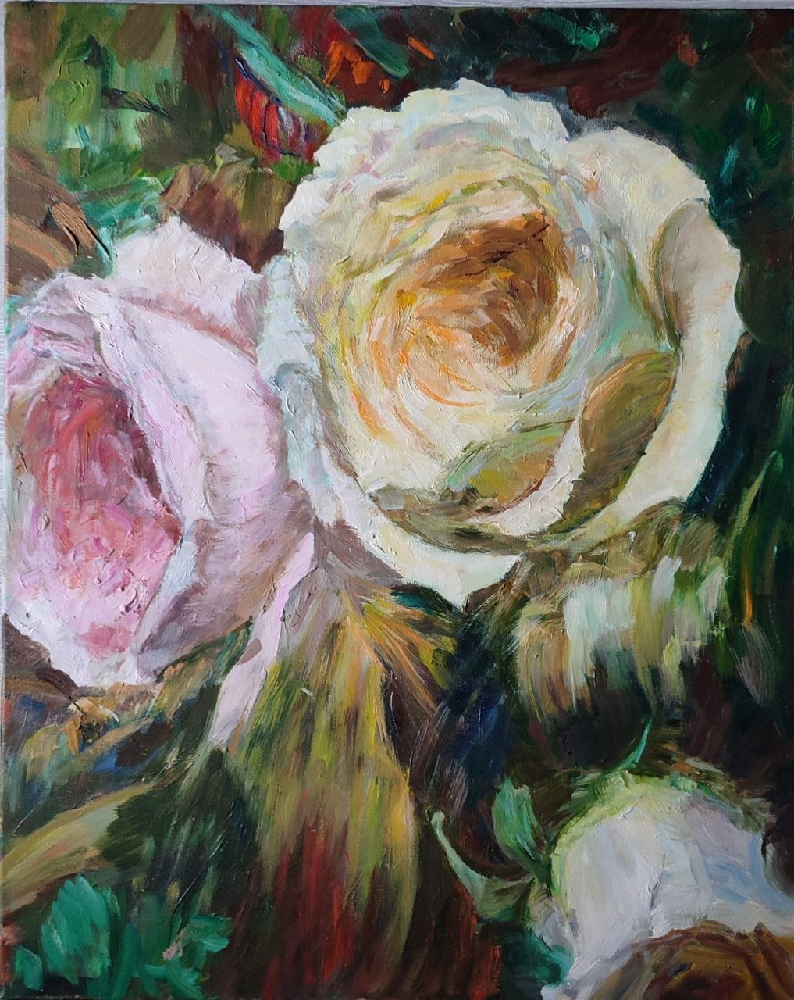
08_V_Марина_1.jpg
Здравствуй, любимая Художка!!! Розы рисовала по картине из интернета. Что-то не нравится, не могу понять. Холст 40*50, масло. С радостью буду ждать вашего разбора. Картины,которые я направляла на разборы раньше и поправила, сразу стали выглядеть очень круто!!!! Спасибо за вашу помощь!
09_D. Tatyana Mamaeva

09_D_Tatyana Mamaeva_1.jpg
Здравствуйте, Олег Леонидович и Владимир Николаевич 😊 Как раз к разбору посылаю незаконченную работу, главный вопрос, куда поместить пятый пион? 😁 История такова: мама привезла из сада вот этот букет, пионы и жасмин, срочно я поставила этот натюрморт, так как лепестки падали, вечернее солнце уходило😁 Кстати, ветки жасмина тоже еще не закончены)) холст 50*70, масло. Переработку моего референса сделал ИИ, я пошлю фото. 🤗Очень жду Ваших ценных рекомендаций 🙏 🤗

09_D_Tatyana Mamaeva_2.jpg
Референсы к работе, Татьяна Мамаева. Надеюсь, правильно послала?😁

09_D_Tatyana Mamaeva_3.jpg
09_V. Alina Grigorjeva

09_V_Alina Grigorjeva_1.jpg

09_V_Alina Grigorjeva_2.jpg
Здравствуйте! «Старая мельница», холст 40 на 50, масло (работа по фото подруги). Это моя вторая работа маслом, до этого пользовалась акрилом. Надо сказать, очень понравилось работать маслом! Это уже седьмая моя работа, присланная на разбор (первой был замок, как вырезанный из картона 😂). Очень благодарна за ваш труд ❤️, продолжаю учиться по вашим видеоразборам. Эта работа уже побывала на разборе народных художников, они мне очень помогли, за это им отдельное спасибо ❤️. Буду благодарна за подсказки.
10_D. In The Shadows

10_D_In The Shadows_1.jpg

10_D_In The Shadows_2.jpg
Добрый день . Писала со своей фотографии. Размер: 20/25. Подскажите, как исправить , над чем поработать, чтобы получилось ближе к реализму. Благодарю вас обоих.
Референс.
10_V. Онипко Людмила

10_V_Онипко Людмила_1.jpg
Акварель, миниатюра А5.
Тропическая стеклянная лягушка. Лист под лягушкой не ядрючий, а приглушенно зелёный. Фото исказило цвет.
Ставила себе задачу изобразить воду, но не получилось, потому что не умею, а на референсе вокруг лягушки просто темный фон.

10_V_Онипко Людмила_2.jpg
11_D. Natalia
{kind=link}
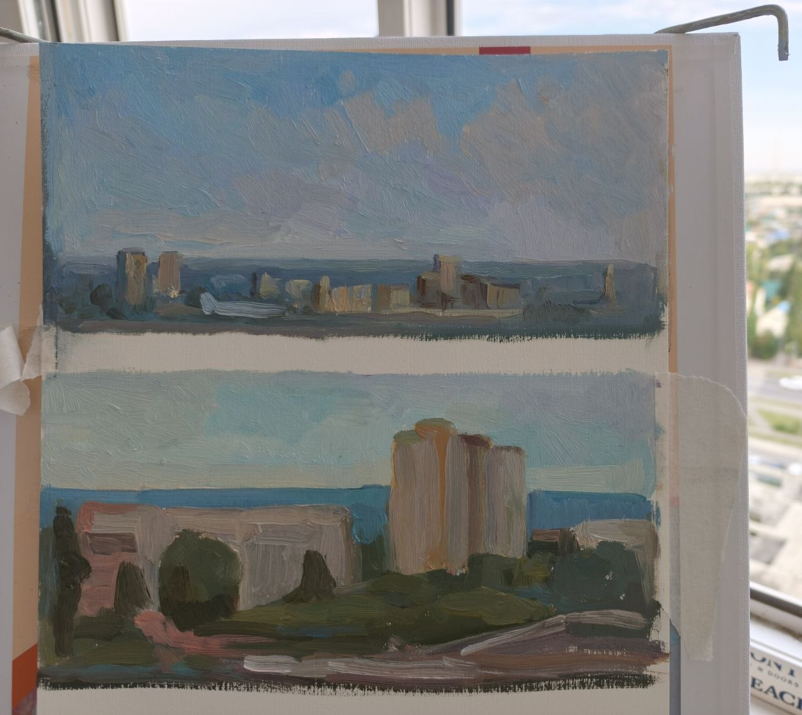
11_D_Natalia_1.jpg
Здравствуйте! Написала 2 быстрых этюда на состояние с балкона с разницей минут в 40. Формат каждого этюда где-то 15 на 29 см. Вторая половина дня. Это один и тот же мотив, просто во 2м варианте здания приблизила. Пожалуйста, дайте комментарии по любому из них, по какому сочтете нужным. Смотрю Ваши разборы, очень много полезного для меня. Это очень здорово, что Вы и такая инициатива есть в сети!! Заранее спасибо за разбор!
11_V. Елена
{kind=link}
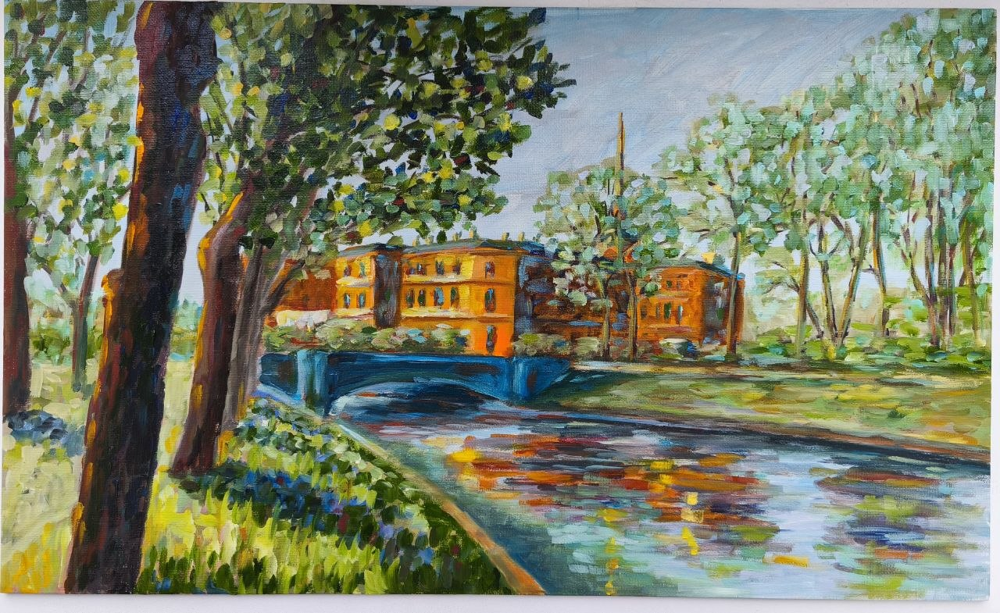
11_V_Елена_1.jpg
Добрый день, Олег Леонидович и Владимир Николаевич! Этюд, Михайловский замок, СПб, масло. Спасибо за разбор и советы! Учусь по Вашим видео.
12_D. Ольга Л

12_D_Ольга Л_1.jpg
Хм 40х50. Здравствуйте, Олег Леонидович и Владимир Николаевич! Отправляю на разбор зимний пейзаж. Писала по своему фото. Хотелось передать состояние первого весеннего солнца в начале марта и радости от скорого окончания зимы. Не совсем довольна результатом. Буду рада, если укажите на мои ошибки. Благодарю!
12_V. Альфия
{kind=link}
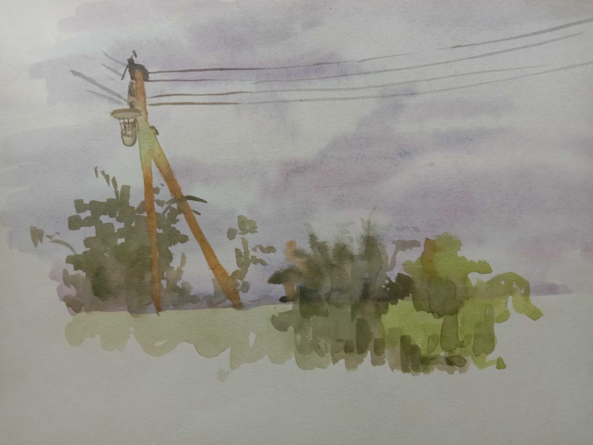
12_V_Альфия_1.jpg
Здравствуйте Олег Леонидович и Владимир Николаевич. Акварель, а4.Этюд с натуры вечернего неба, пыталась передать цвет облаков. За эти несколько минут включилось уличное освещение и его туда же 😉
13_D. Ольга G

13_D_Ольга G_1.jpg
Здравствуйте! Очень хотелось бы узнать Ваше мнение, Олег Леонидович, о работе. Акварель, формат а3, целлюлоза. Работа по моей фотографии из Переславля-Залесского. Вот мне в ней чего-то не хватает, а чего-не могу понять. С удовольствием всегда смотрю разборы работ на каналае и хочу сказать спасибо большое за Ваш труд, профессионализм и желаю процветания вашему каналу.
13_V. Елена Богданова

13_V_Елена Богданова_1.jpg
Здравствуйте, Олег Леонидович и Владимир Николаевич! Благодарю вас за терпение и такие уникальные разборы работ. На этот раз я с портретом моего второго подопечного. Первая чихуашка Нури была в работе "ГавкОло ЧихусмАни", помните?)
Сейчас-портрет моего чихуахуа Персика, формат А3, пл. 200, масляные карандаши+гелевые ручки. Сюжет родился за пару минут. Рисовала дольше 😆 Работа называется "Я-Первый", это полностью отображает характер моего Персюхи. На картине он сидит на синем троне(спинка) и купается в лучах любви. Не пыталась нарисовать фотокопию по внешнему виду, задача была передать характер. Получилось☺️ Он везде первый и ему всё надо! Фото модели прилагаю. И да-у него ореховые глаза. Высылаю два варианта одной работы-на солнце днём и без прямого солнца (оба фото на балконе). Я не знаю, какая цветопередача у вас и видно ли контраст и рефлексы. Благодарю, мира и здоровья. С уважением, Елена БОгданова.

13_V_Елена Богданова_2.jpg

13_V_Елена Богданова_3.jpg

13_V_Елена Богданова_4.jpg
Лидия , я переслала Вашу работу в "Приём работ". Здесь ее не увидят! У Вас красивая работа.

13_V_Елена Богданова_5.jpg
Пожалуйста 💛
14_D. Ludmila Andenova (Андёнова)
_1.jpg)
14_D_Ludmila Andenova (Андёнова)_1.jpg
_2.jpg)
14_D_Ludmila Andenova (Андёнова)_2.jpg
_3.jpg)
14_D_Ludmila Andenova (Андёнова)_3.jpg
Здравствуйте, уважаемая «Художка»! Я опять к вам на разбор. Это новая работа маслом 40х50 по этюду с натуры. «Крутицкое подворье. Москва». Хотелось бы довести ее до определенной завершенности. Помогите, пожалуйста, советом. Уважаю и прислушиваюсь к Вашему мнению! Заранее благодарю!
14_V. Наталья К.

14_V_Наталья К._1.jpg
Здравствуйте, многоуважаемые Олег Леонидович и Владимир Николаевич!!!Передаю вам большой привет из солнечной Греции! И хочу сказать вам огромное спасибо за вашу неоценимую помощь и те знания, которыми вы делитесь.
Прошу ваш разбор и свежий взгляд со стороны профессионалов. Работа выполнена маслом, на данный момент она не закончена. Сюжет из греческой мифологии — «Леда и лебедь».
Процесс застопорился, не знаю, как двигаться дальше. Чувствую, что композиции или деталям чего-то не хватает, но глаз замылился.
Подскажите, пожалуйста, что нужно исправить или добавить, чтобы работа выглядела завершенной и цельной?
Буду очень благодарна за конструктивную критику и советы по дальнейшим шагам!
Заранее благодарю!!!!
Ваша благодарная ученица из худклуба, Наталья 💖💖💖💖💖
15_D. Oksana
{kind=link}
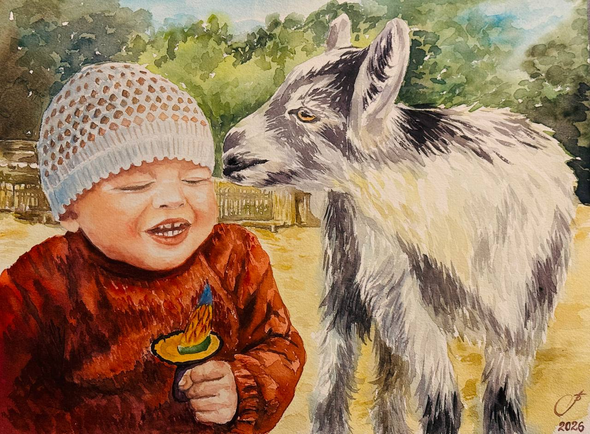
15_D_Oksana_1.jpg
Оксана Баталова
«Давай дружить»
бумага, акварель, 27х37 см
2026 год
Здравствуйте, Олег и Владимир! Мне очень нравятся ваши разборы, спасибо за них👍
Нарисовала свою ещё маленькую дочку по фото. Фото было сделано в контактном зоопарке, там было много козлят и они окружили дочку, а она вся сжалась, зажмурилась и смеялась😝
Благодарю за разбор!
15_V. Катерина Прохорова

15_V_Катерина Прохорова_1.jpg

15_V_Катерина Прохорова_2.jpg

15_V_Катерина Прохорова_3.jpg
Тоже жду😅
16_D. Елена Хмелева

16_D_Елена Хмелева_1.jpg
Здравствуйте ,уважаемые Олег Леонидович и Владимир Николаевич!
Меня зовут Елена .Присылаю вам мою работу,размер А3, сухая пастель. Я написала ее , посмотрев мастер-класс, но не сразу ,а спустя какое-то время ,по памяти. Это второй раз ,когда я присылаю вам свою работу, первой была по мотивам Моне «Дама с зонтиком», заранее благодарю за разбор !
16_V. Света Света

16_V_Света Света_1.jpg
"Край,мій рідний край!"
А4.Гуашь.
Здравствуйте Олег Леонидович и Владимир Николаевич!
Побывала в отпуске в Карпатах.
Впечатлилась ,
насладилась.Ностальгирую...
Рисовала по своей фотографии.
Рисунок уже побывал в совнархуде.
Какие будут замечания?Спасибо!
17_D. Нина Федоровна

17_D_Нина Федоровна_1.jpg
Здравствуйте уважаемые Олег Леонидович и Владимир Николаевич! Благо дарю Вас за разбор работ! Это моя работа написаная до знакомства с художкой. Акрил.
17_V. Кохтюк Лидия Lida.Kokhtyuk.78@mail.ru

17_V_Кохтюк Лидия Lida.Kokhtyuk.78@mail.ru_1.jpg
🔥
18_D. Talexiom
{kind=link}
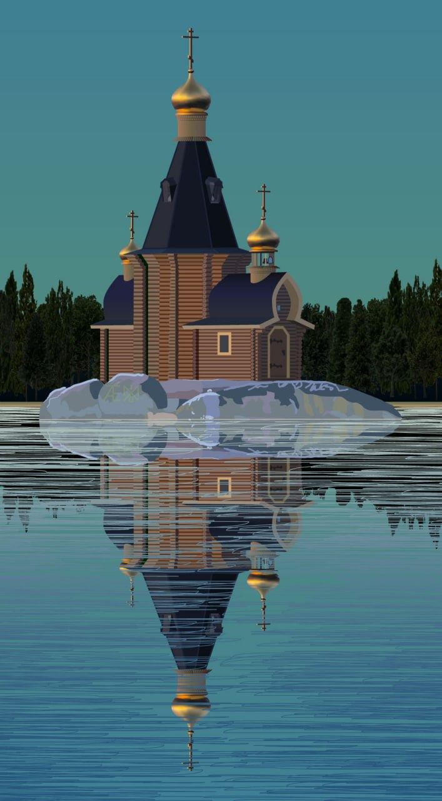
18_D_Talexiom_1.jpg
Здравствуйте, Олег Леонидович и Владимир Николаевич.
В ответ на вопрос Олега Леонидовича с прошлого разбора шлю изображение перспективной сетки, которую делал от руки.
На вопрос Владимира Николаевича отвечаю, что под инструментом я имел в виду саму векторную графику: то есть векторная графика как инструмент. И её особенности не зависят от программы — она изначально разрабытавалась для дизайнерских задач.
На разбор высылаю изображение храма апостола Андрея Первозванного на реке Вуокса в Карелии. Это последнее, что я сделал в векторе и оставил его — не даёт он размаху. (Есть и другие работы, но те совсем примитивные). Когда делал изображение пять лет назад, не обратил внимания на небо — вроде казалось обычным. А сейчас, когда собрался отправить на разбор, оно показалось каким‑то странным. По задумке оно должно быть сумеречным. Буду признателен и за прочие замечания и советы.
{kind=link}
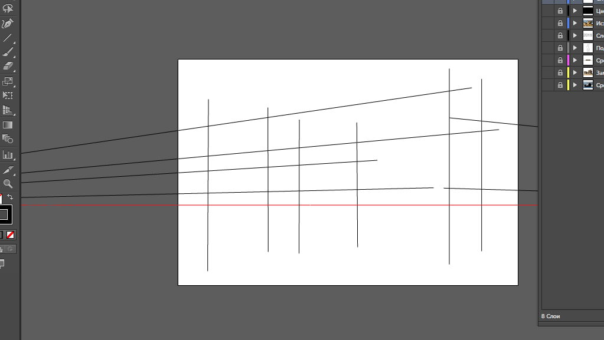
18_D_Talexiom_2.jpg
18_V. Dima Rogozhnikov

18_V_Dima Rogozhnikov_1.jpg
Здравствуйте, это моя ещё не законченная работа маслом на холсте. 35х50см. Буду благодарен за рекомендации
19_D. Ландыш Жемчужная

19_D_Ландыш Жемчужная_1.jpg
Уважаемые Олег Леонидович и Владимир Николаевич! Добрый день.
Прилагаю работу "Тыквенное дело". 30 х 40. Картон. Масло.
Референс подготовила с помощью ИИ. Но особо его не придерживалась, так как он не понял, как я это вижу.
Здесь по максимуму пыталась применить знания полученный именно из ваших разборов. Пыталась учесть и строение, и композицию и цветовое решение. Так же перекличку между цветами соседей.
Знаю, бутыль с краю параллельно раме, но более никуда не смогла красиво пристроить. Казалось круглый графин будет опять кругом вокруг круглых тыкв.
Знаю тыквы не убедительны в объеме, беда - знаний не хватает.
Прошу сильно покритиковать, чтоб запомнила -много знаний, раз и на всегда.
Спасибо.
Ландыш. 2 года с кистями.

19_D_Ландыш Жемчужная_2.jpg
19_V. Евгений
{kind=link}
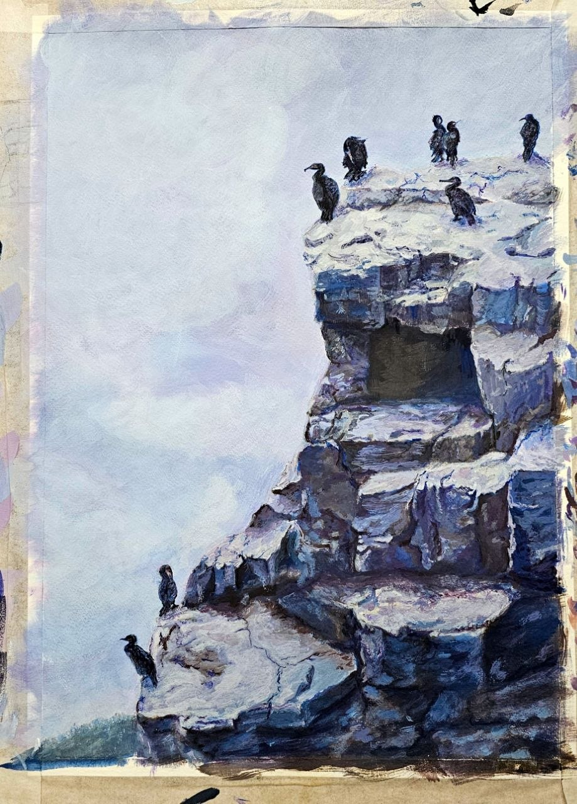
19_V_Евгений_1.jpg
Добрый день! Направляю работу на разбор. Темпера, бумага (А3). По фото, которое сделал во время путешествия по Байкалу (референс прикладываю). Заранее благодарю за вашу оценку и рекомендации на будущее. С уважением, Евгений
{kind=link}
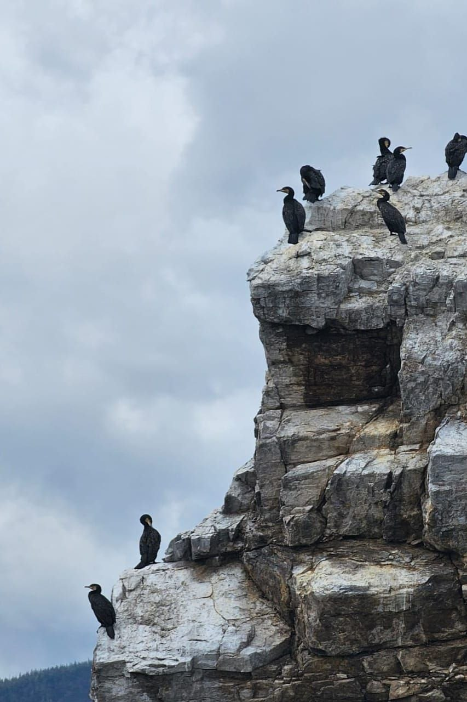
19_V_Евгений_2.jpg
20_D. Татьяна
{kind=link}
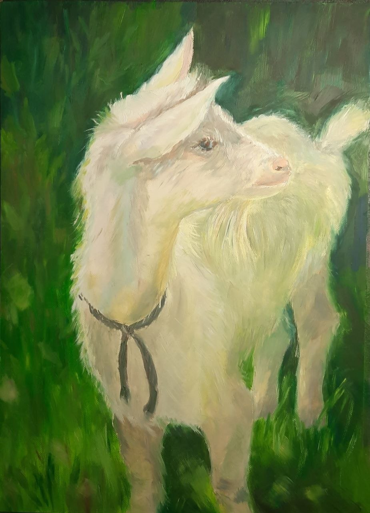
20_D_Татьяна_1.jpg
Неожиданная встреча на лесной опушке. Бумага для масла. Масло. А3. Уважаемые Олег Леонидович и Владимир Николаевич! Мой опыт рисования животного. Белое на зеленом😁. Уж очень впечатлила меня встреча в лесу с белоснежной козочкой. Она вышла из зарослей кустарника и крапивы, подсвеченная солнышком, и тоже, кажется, удивилась этой встрече. Остановилась на минутку, как мимолетное виденье, и снова скрылась в лесу, ухватив листок крапивы. Хорошо, у меня телефон был наготове, успела сфотать. Ну а дома сразу за пару часов быстро нарисовала и козу и свое впечатление. Готова доработать, исправив ошибки. Ноги не уместились, наверное, нужно больше в траве утопить? Очень жду ваших советов. Татьяна. Саратов
{kind=link}
20_V. Алёна Мудренок

20_V_Алёна Мудренок_1.jpg
Добрый вечер, Олег Леонидович. Это портрет турецкой актрисы, рисовала фломастерами в скетчбуке А4. Буду рада Вашим замечаниям. Хорошего Вам вечера
21_D. Наталья Крупицкая

21_D_Наталья Крупицкая_1.jpg
Дополнение к сообщению. Это дубовая аллея в роще Баума в Алматы. Свое фото.
21_V. Алина
{kind=link}
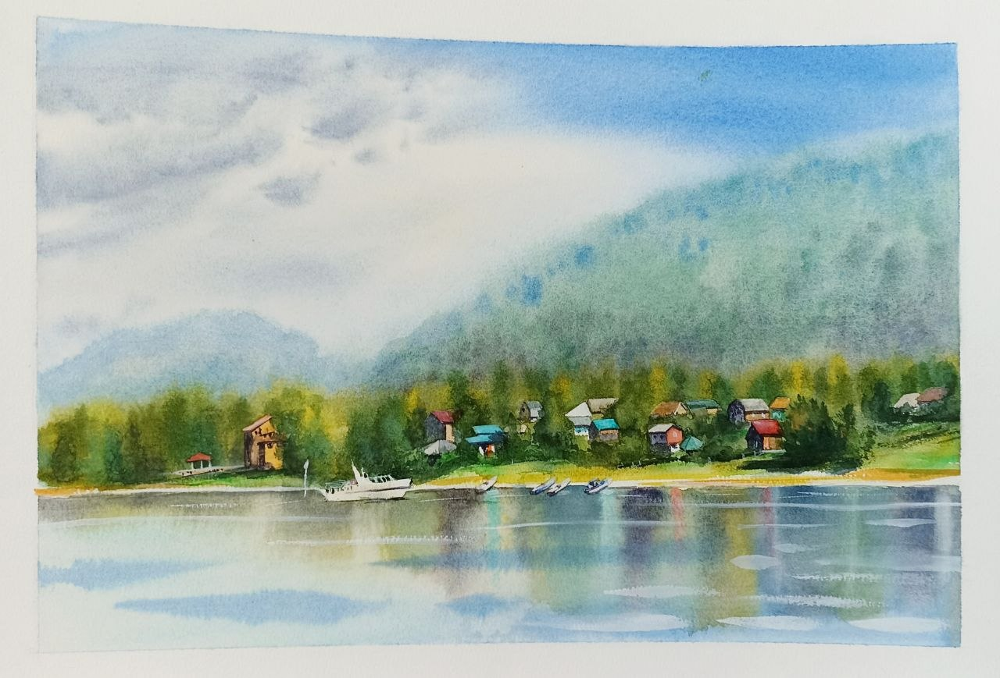
21_V_Алина_1.jpg
Здравствуйте, Олег Леонидович и Владимир Николаевич. Спасибо за Ваши интересные разборы, за обучающий формат. Акварель по фото из интернета, а3, кажется, это Алтайский пейзаж.
22_D. Алина Ю

22_D_Алина Ю_1.jpg
Пора переименовать во "Всемирный канал Художка" А там и до Межгалактического недалеко 😁
22_V. Галина П

22_V_Галина П_1_ДУБЛЬ.jpg
Дополнение к набору для вина.Это моя первая работа акварелью.Далась очень трудно после акрила ,когда хочется писать более укрывисто и пастозно. Мне кажется,что не хватает солнечных бликов на столе. И не только. Посоветуйте,что можно дополнить. С уважением, Галина П.

22_V_Галина П_2_ДУБЛЬ.jpg
Извините ! Ошиблась ,давно не посылала,забыла как это делается .Исправлюсь
23_D. Татьяна Воронова

23_D_Татьяна Воронова_1.jpg
Как здорово! Большая Вам благодарность🤝
23_V. Nadia
{kind=link}
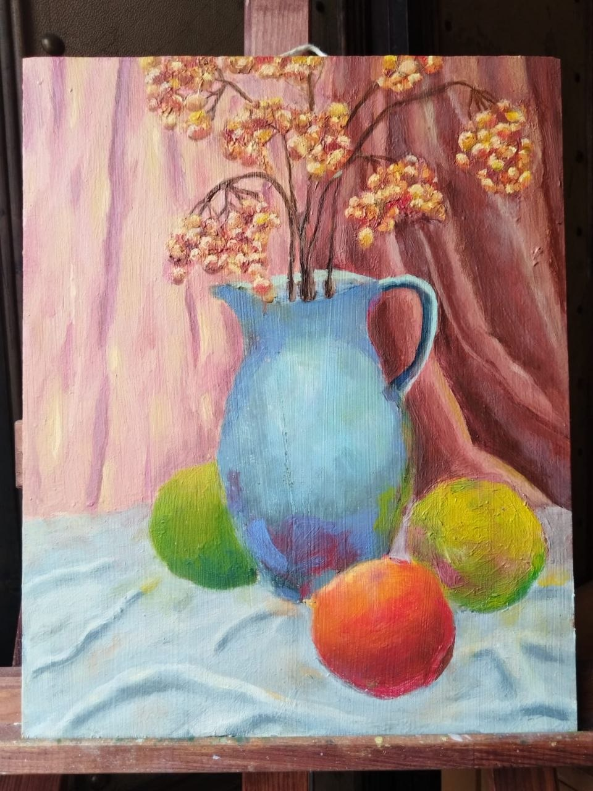
23_V_Nadia_1.jpg
Добрый день, дорогие Олег Леонидович и Владимир Николаевич. Отправляю вам свой незаконченный натюрморт. По-моему, складки красной драпировки - просто караул. Никак она у меня не получается. Наверное, потому что пишу не с натуры. Натюрморт начала писать зимой в изостудии, когда листья с рябины уже опали. Может, их всё-таки пририсовать?
24_D. Nataliya
{kind=link}
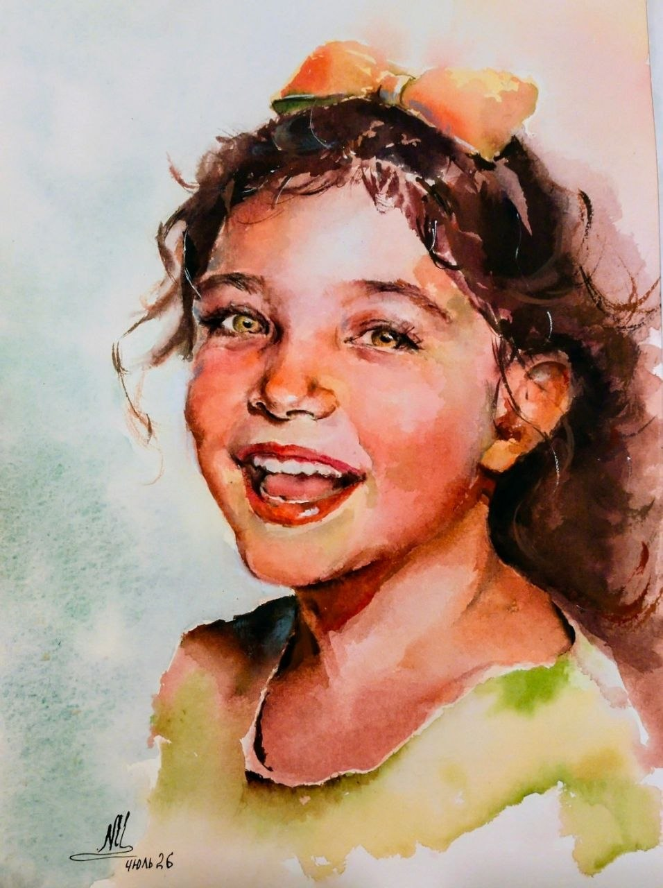
24_D_Nataliya_1.jpg
И снова здравствуйте, наши уважаемые учителя. Оцените, пожалуйста, портрет девочки. Спасибо большое вам❤️❤️❤️
24_V. Рыбак Светлана Сергеевна

24_V_Рыбак Светлана Сергеевна_1.jpg
Широка страна моя родная. Много в ней лесов, полей и рек.
И Художка вот не знает края, где не жил бы художник-человек!
❤️🎨❤️🎨❤️🎨
Олег Леонидович! Спасибо за отличный челлендж и за великолепный ролик! 🔥
25_D. Aris Pogosyan

25_D_Aris Pogosyan_1.jpg
Добрый день уважаемые наставники, прошу посоветовать как быть дальше, холст на два, 50*40 см, картина из серии «Духи леса», буду очень признателен.
25_V. Татьяна
{kind=link}
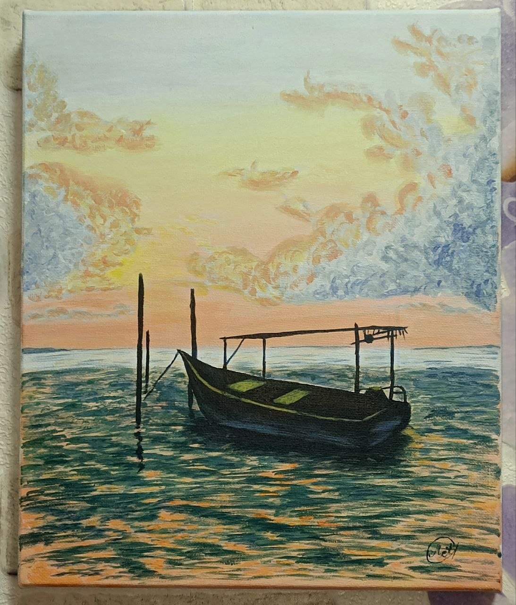
25_V_Татьяна_1.jpg
Здравствуйте. Отправляю очередную свою работу. Холст 25*30 , акрил. Буду признательна за ваш отзыв. Заранее благодарю . С уважением , Татьяна.
26_D. Ольга
{kind=link}
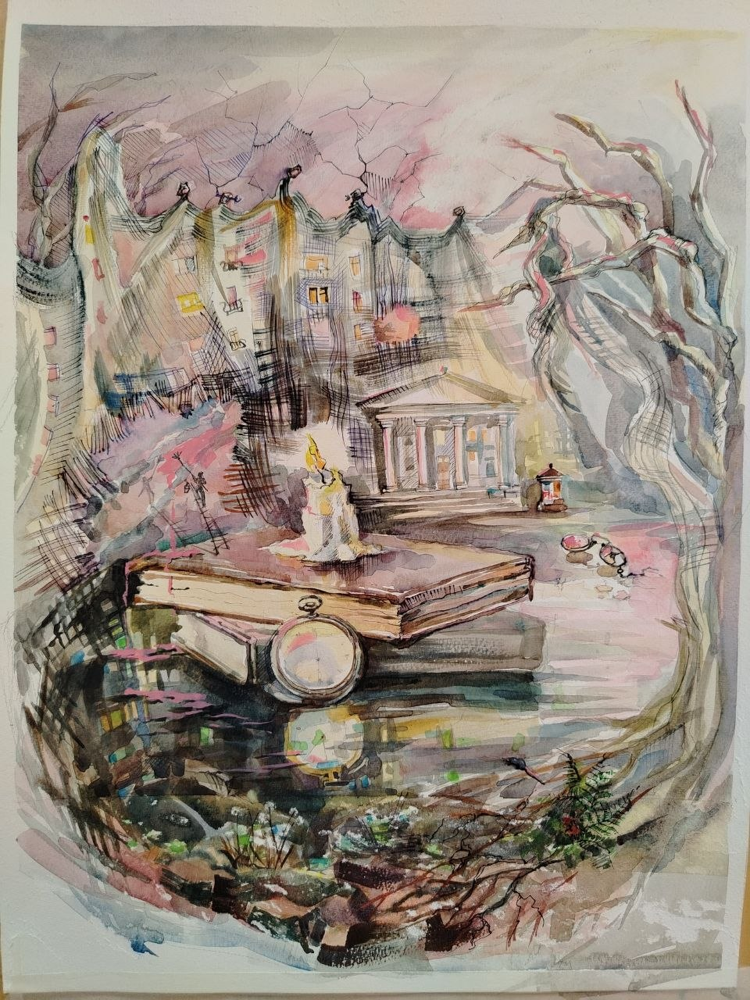
26_D_Ольга_1.jpg
Здравствуйте Олег Леонидович и Владимир Николаевич! Акварельная картинка вида из окна ночью. Очень захотелось передать ощущение хаоса, абсурда и гадких розовых всполыхов. Наверное, левый верх надо затемнить. Спасибо за разборы.
26_V. Ирина
{kind=link}
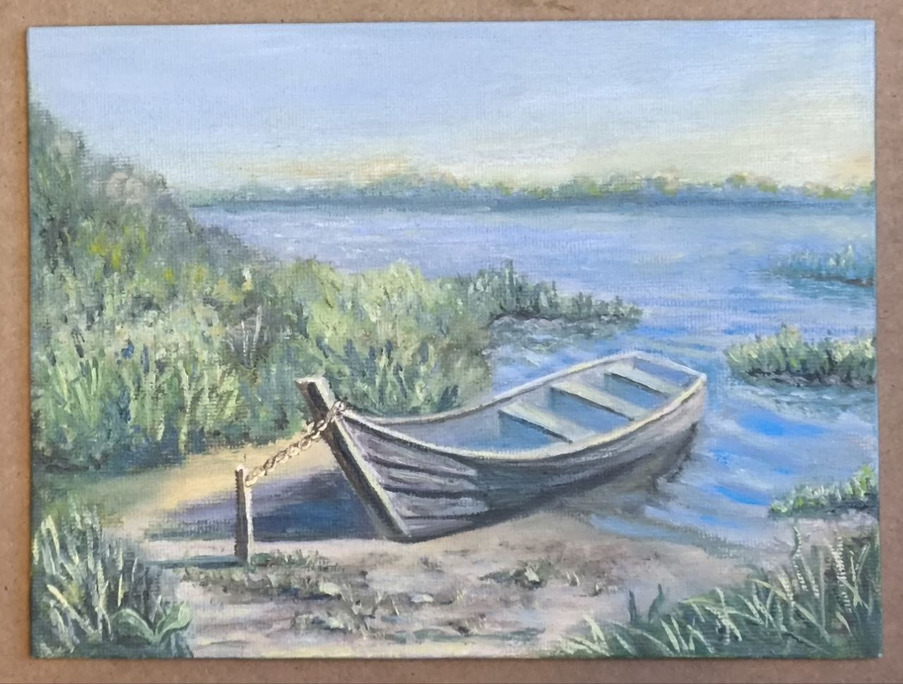
26_V_Ирина_1.jpg
Олег Леонидович и Владимир Николаевич, здравствуйте! Работу начала несколько месяцев назад, сейчас хочу доделать. Помогите пожалуйста. Работа 20х15, холст на картоне, масло. Спасибо за Ваш труд!
27_D. Катерина
{kind=link}
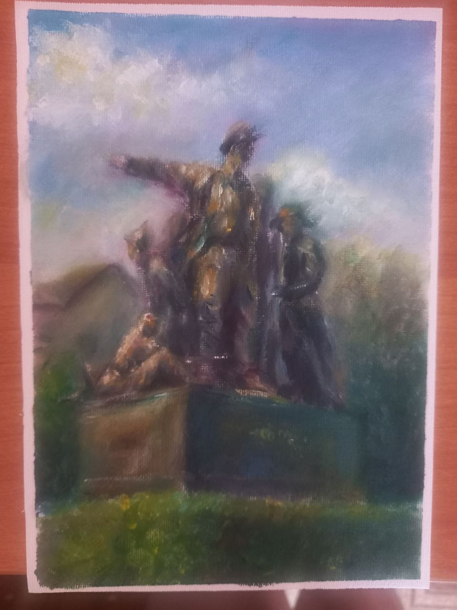
27_D_Катерина_1.jpg
Добрый день, дорогая художка! Это быстрый плинерный рисунок. Есть ли у меня ошибки? Заранее спасибо за разбор
27_V. Игорь Владимирский

27_V_Игорь Владимирский_1.jpg
Здравствуйте, Олег Леонидович и Владимир Николаевич! 🤝
Вот он весь мой триптих наконец-то, я его завершил! 😅
С первой его частью мы разобрались в прошлый раз и я по Вашим рекомендациям подправил его, как смог, большое Вам спасибо!
Напомню смысл: люди тут входят в цифровые "порталы" в виртуальной реальности, чтобы погрузиться в определённые сегменты этого виртуального мира, где можно кайфовать как угодно. Они выбирают виды наслаждений.
Во второй части они уже погружены: кто-то испытывает физические наслаждения (например, лопает гигантский торт, летает или плавает) - это красная зона. Кто-то испытывает больше эмоциональные или ментальные удовольствия, например строит романтические отношения или просто дружбу с нейросетями, хотя учитывая то, что в этом новом 10D мире присутствуют и вкусы и запахи и прикосновения, эти виды удовольствий могут перекликаться - например, можно пообниматься с ИИ в виртуальном пространстве.
Тёмная область внизу и ярко золотая вверху - это развитие и деградация. И вот эти летающие фигурки людей, кто куда из них летит? Это элемент недосказанности, загадка для зрителя.
Третья часть - это последствия всего этого... Люди в мыльных пузырях - это символ изоляции, одиночества от недостатка реального, живого общения. Люди сидят там в грустных позах и пытаются пробиться друг к другу через стены мыльных пузырей, но не могут...
А внизу оазис, посреди которого шикарное застолье, где тренер по общению (профессия будущего - он заново будет учить людей общаться, возвращать их таким образом в реальность) разливает всем чай из большого глиняного чайника, реального, а не цифрового! Это как бы райский уголок посреди ада цифрового одиночества, надежда на то, что люди всегда будут ценить живое общение. 😍
Это цельный триптих на одну тему, это одновременно и три и одна работа, поэтому надеюсь, Вы не посчитаете это за нарушение правил.
Весь триптих называется "Цифровой рай".
Названия его частей:
1. "Выбор" (или "Искушение") 60×35 см.
2. "Погружение" 60×60 см.
3. "Расплата и искупление" 60×35 см.
Холст/масло😊 как всегда пальцами, а линии делаю чаще всего ватными палочками)

27_V_Игорь Владимирский_2.jpg

27_V_Игорь Владимирский_3.jpg
28_D. LENA
{kind=link}
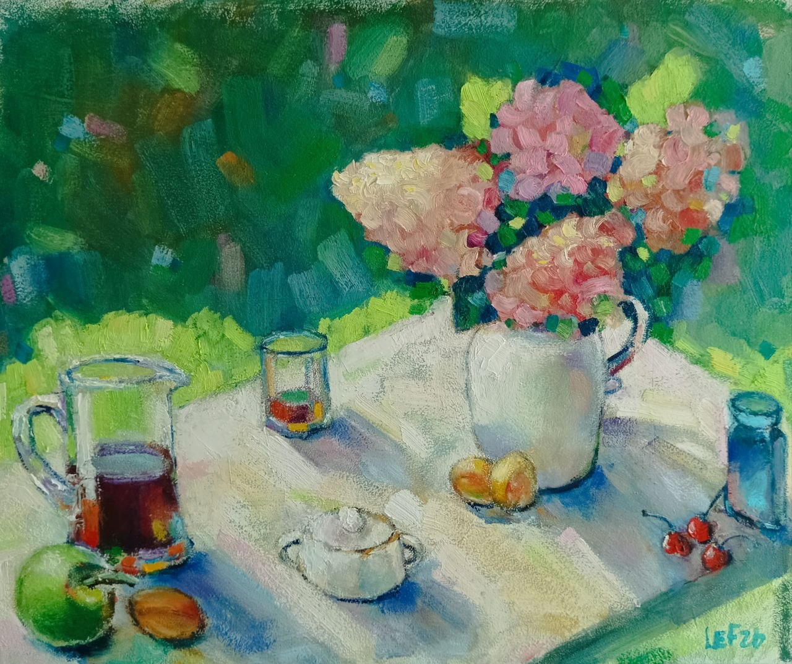
28_D_LENA_1.jpg
Здравствуйте. Нашла ваш канал совсем недавно и хочу поблагодарить вас за те знания, которыми вы делитесь в ваших уроках и разборах картин. Огромное количество бесценной информации! Отдельное спасибо за очень тактичный и детальный, профессиональный разбор работ подписчиков. Желаю вашему каналу процветания, ахалай махалай🪄😁.
Посылаю вам первый раз одну из моих последних работ маслом. Мне нравятся состояние незаконченности в работах но в то же время ощущение энергии и движениея, даже если это обыкновенный натюрморт. Удалось ли мне передать это состояние в работе? Буду рада любыи советам и критике. Спасибо за ваш труд. С уважением Елена
28_V. Art-info
{kind=link}
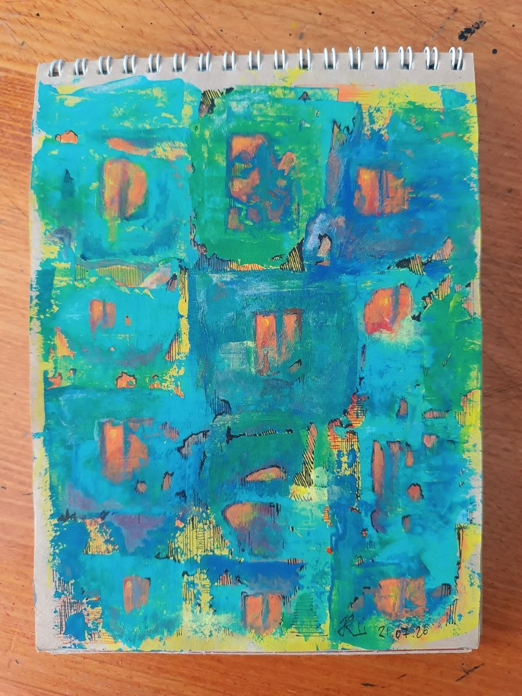
28_V_Art-info_1.jpg
Шалом тутти!
На фото экспериментальная выкраска-вымазка акриловых красок в блокноте А5, которая случайным образом составила композиционно- абстрактный сюжет.
Хочу это переделать - воплотить в материал, достойный рамы.
В чем сомнения и вопросы?:
-Стоит ли оставить штрихи тушью?
-Все ли цвета подружились, и как после этого чувствуют себя зайцы?
-Оставить эти пятна квадратом в квадрате, или сделать основной силуэт кругом, ромбом или, например, перевёрнутым треугольником?
- Как и где улучшить превалирование масс, пульс композиции?
- Может есть другие нюансы, готов мотать на ус.
Рахмет-медвед.
С ув Негоций.
29_D. Александр
{kind=link}
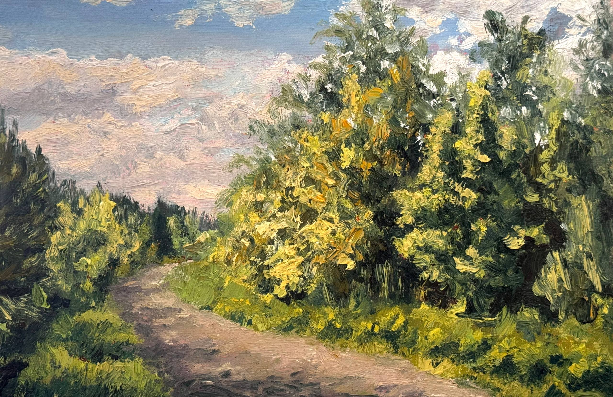
29_D_Александр_1.jpg
Добрый день! На это раз прошу Вашей помощи с пленэрным этюдом. Это мои первые опыты с маслом —обычно писал акрилом, гуашью и акварелью.
Самое непонятное на данный момент: как класть мазок, чтобы проявить и форму, и фактуру. Масло такое объемное по сравнению с акрилом и гуашью - каждое движение кистью остается!
29_V. Наталья Ф

29_V_Наталья Ф_1.jpg
Добрый вечер, Олег Леонидович и Владимир Николаевич! Прибежала с работы, а тут новый прием работ открыт! Присылаю свою работу масляной пастелью, формат А4. Недавно только открыла для себя этот материал и сразу влюбилась. "Солнечный денёк в парке", пленэр. Буду рада услышать ваши замечания. И если можно, поделитесь секретами, как рисовать такими толстыми мелками мелкие детали. Спасибо
30_D. Мария Сазонова

30_D_Мария Сазонова_1.jpg
Как здорово, какая обширная география у нашей Художки!
Спасибо за чудесные эмоции с утра! И музыка потрясающая, такая лёгкая и чистая!
30_V. Katrin
{kind=link}
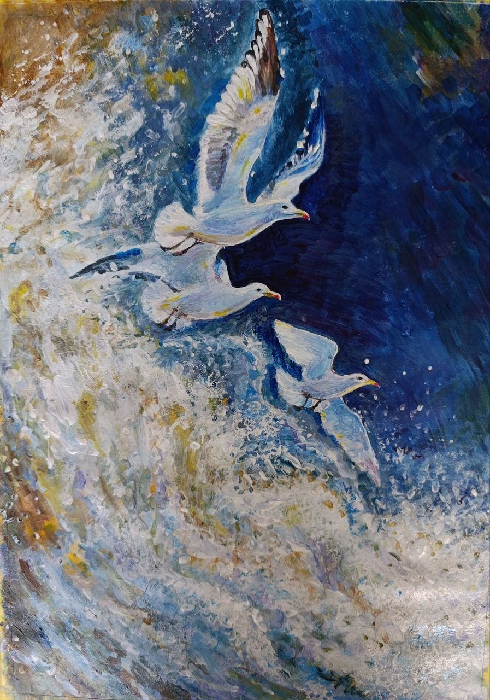
30_V_Katrin_1.jpg
Здравствуйте Олег Леонидович и Владимир Николаевич! Прошу провести разбор моей работы. Что можно улучшить в ней или что учесть в будущих работах? Работа выполнена акрилом, Формат А3. Заранее благодарю Вас.
31_D. Маша
{kind=link}
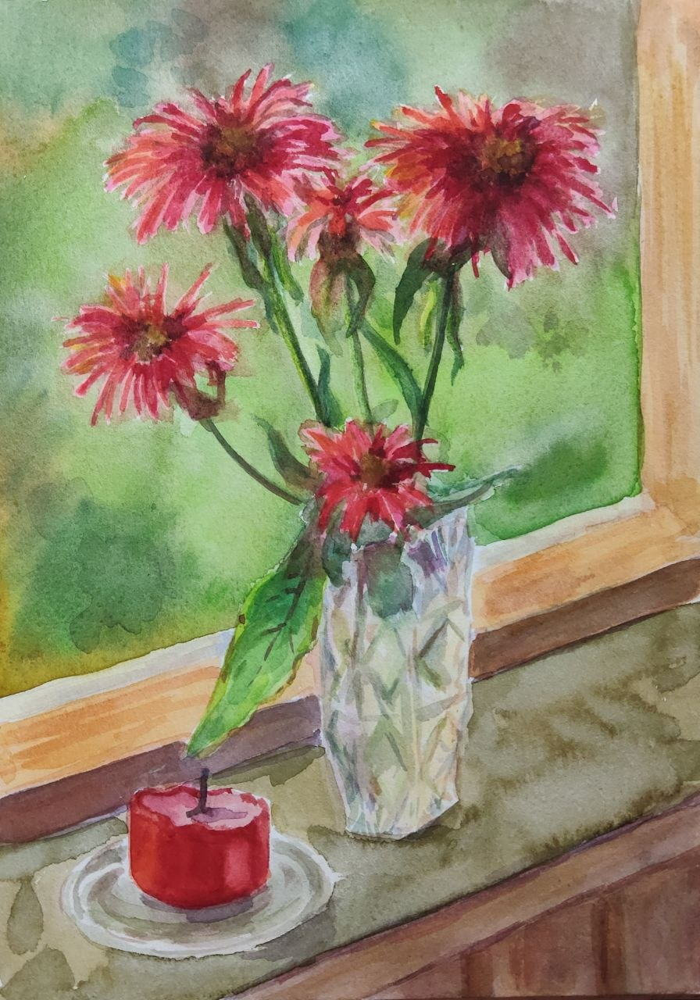
31_D_Маша_1.jpg
Добрый день, Олег Леонидович и Владимир Николаевич! Пользуясь временно работающим ТГ, отправляю на разбор свою летнюю акварельную работу. Интересуюсь всеми академическими основами, но также и именно акварельными техниками, это нечто особенное, конечно. Буду очень благодарна за замечания в целом и с точки зрения акварели. Пользовалась маскировочной жидкостью, но теперь думаю, что проще было бы без нее обойтись. Спасибо вам большое за учебные курсы, изучаю их, в также за эти замечательные разборы, которые уже очень многому научили.
31_V. Лобанова Лидия

31_V_Лобанова Лидия_1.jpg
О, Благодарю Вас, Елена❤️🙏
32_D. Светлана
{kind=link}
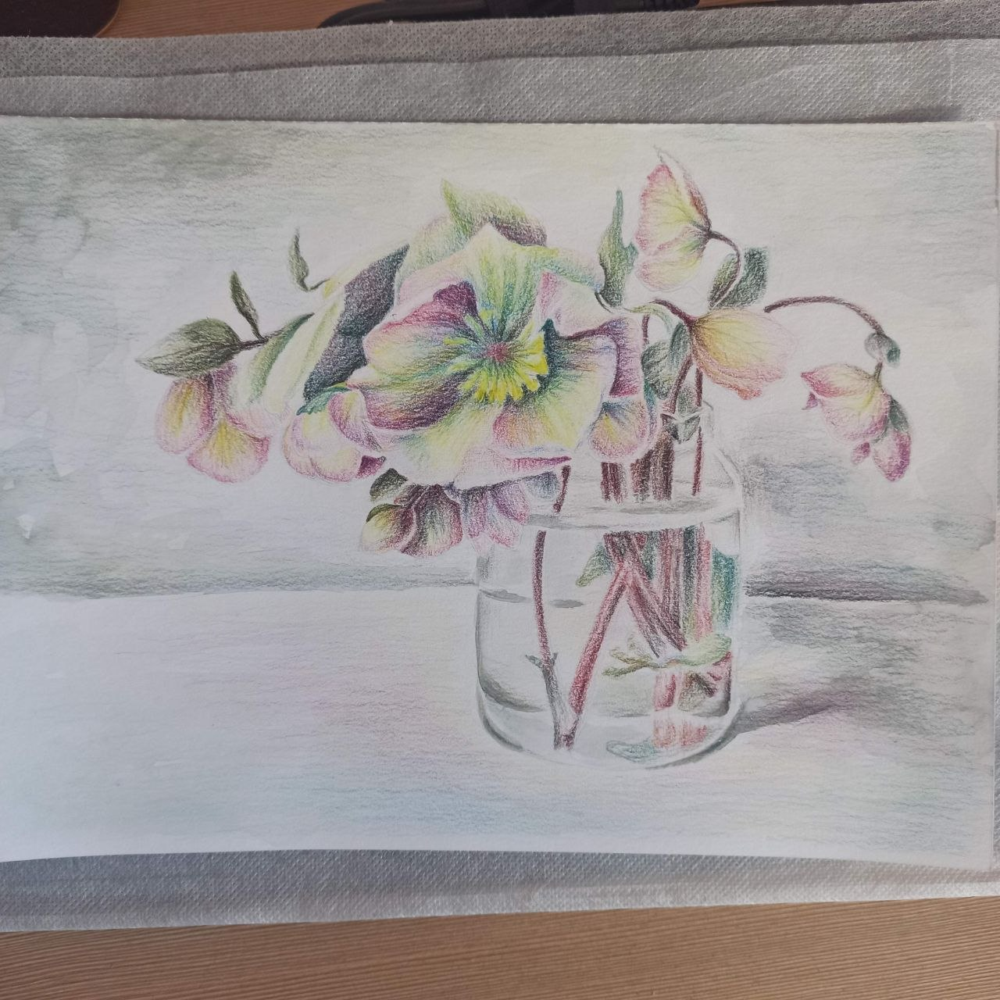
32_D_Светлана_1.jpg
Хочу сделать такую открытку. Фон как обычно недоделанный. Посоветуйте, пожалуйста, делать ли более активный по цвету фон. И что ещё можно придумать в этой работе. Акварельные карандаши на формате А4
32_V. падре
{kind=link}
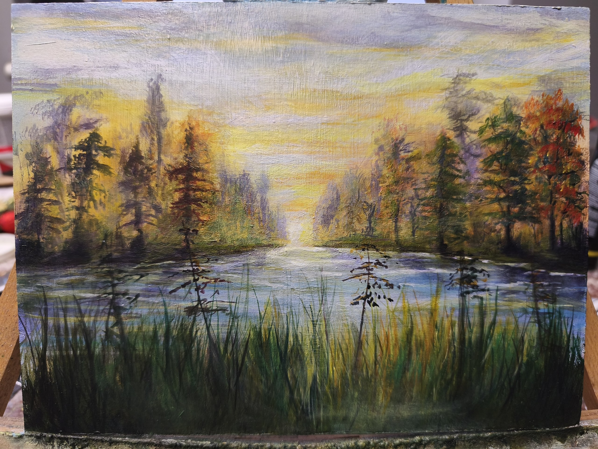
32_V_падре_1.jpg
МДФ, грунт, акрил, 24*18. Набросок перешёл в нечто большее, буду рад любым замечаниям 😊
33_D. Oksana Sana

33_D_Oksana Sana_1.jpg
Работа акрилом 40×40 см.
33_V. Kirill
{kind=link}
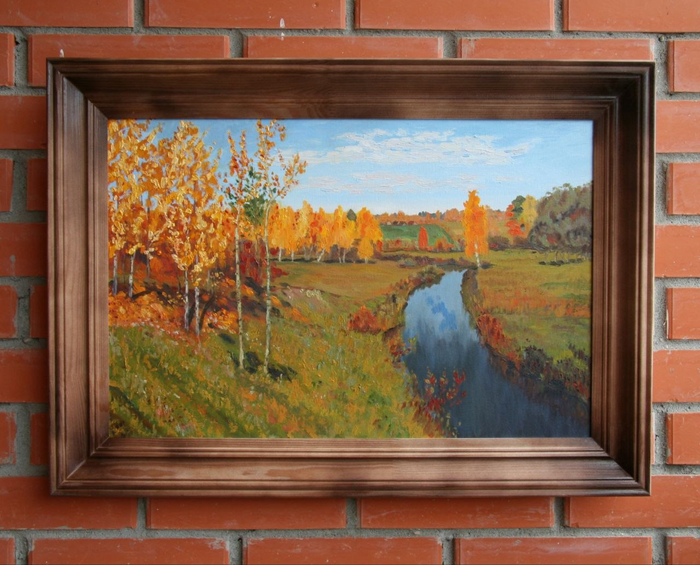
33_V_Kirill_1.jpg
Здравствуйте. 60*45, холст, масло. С картины И.И. Левитана - Золотая осень.
34_D. Nastya_kul
{kind=link}
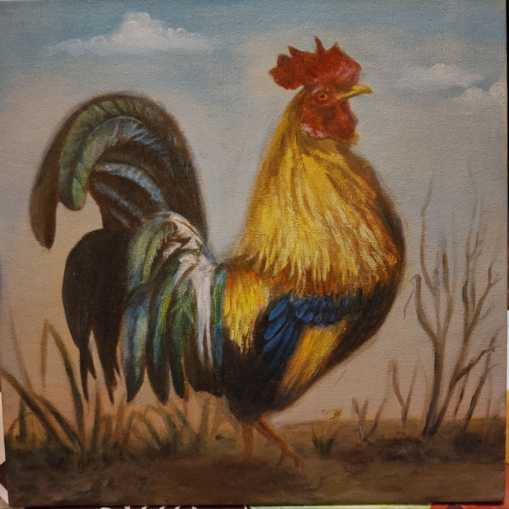
34_D_Nastya_kul_1.jpg
Здравствуйте! Разберите пожалуйста, не могу прописать почву и лапы петуха, и не знаю как аккуратно прописать небо вокруг него
34_V. Владимир Юсупов

34_V_Владимир Юсупов_1.jpg
Закрываемся? Все прислали?
35_D. Марина
{kind=link}
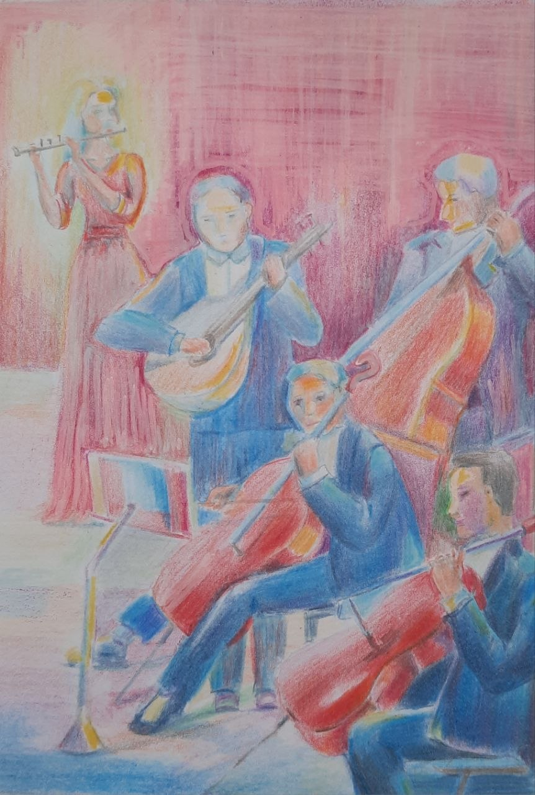
35_D_Марина_1.jpg
Добрый день! Нарисовала мужу, он любитель поиграть в оркестре. Не могу понять, как сделать главного героя, который вверху справа, ярким. При этом он дальше всех. Помогите, пожалуйста, закончить грамотно. Цветные карандаши.
36_D. .Анюта.
{kind=link}
37_D. Алексей
{kind=link}
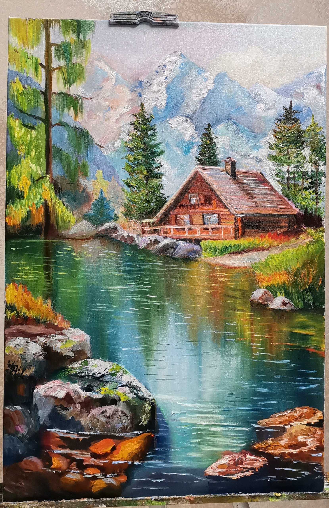
37_D_Алексей_1_ДУБЛЬ.jpg
Здравствуйте, Олег Леонидович, Владимир Николаевич и все присутствующие! Благодарю вас за разбор моих прошлых работ: «Зайчики в зимнем лесу», «Осенний лес», «Задний двор» и т. д. Я не имею художественного образования, учусь по видеоурокам из интернета. По поводу выставленной работы у меня вопрос: почему эту работу опытные художники называют скорее иллюстрацией, а не живописью? Спасибо

37_D_Алексей_2_ДУБЛЬ.jpg
Здравствуйте, Олег Леонидович и Владимир Николаевич и все присутствующие! Благодарю Вас за разбор моих прошлых работ: зайчики в зимнем лесу, осенний лес, задний двор и т.д. Я не имею художественного образования, учусь по видео урокам из интернета. Относительно выставленной работы у меня вопрос: почему эту работу опытные художники называют больше иллюстрацией, а не живописью? Спасибо!
38_D. Ольга
{kind=link}
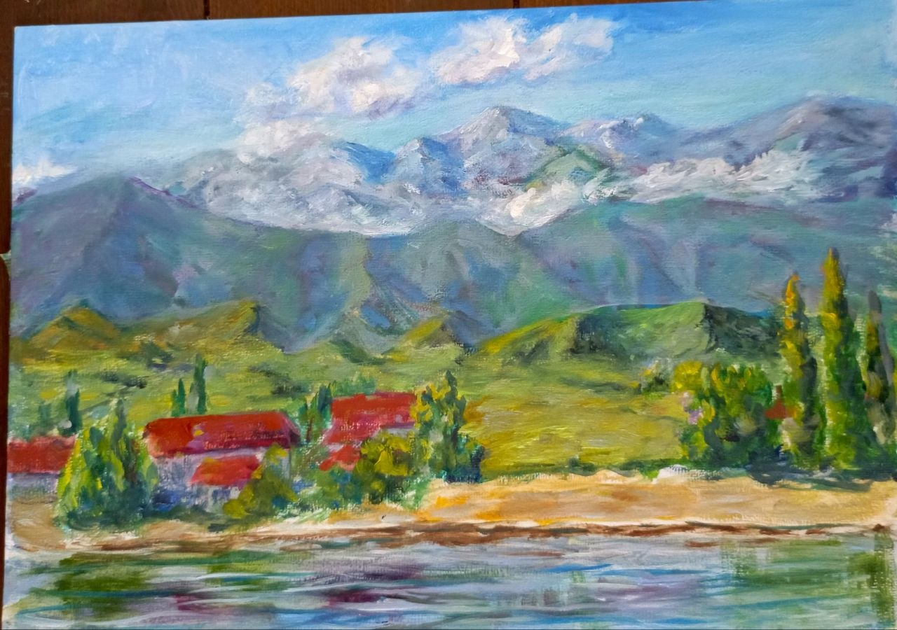
38_D_Ольга_1.jpg
Здравствуйте. Этот этюд писала с натуры, облака в горах. Но сколько не исправляла смотрится детским рисунком. место Иссык-Куль. Спасибо
{kind=link}